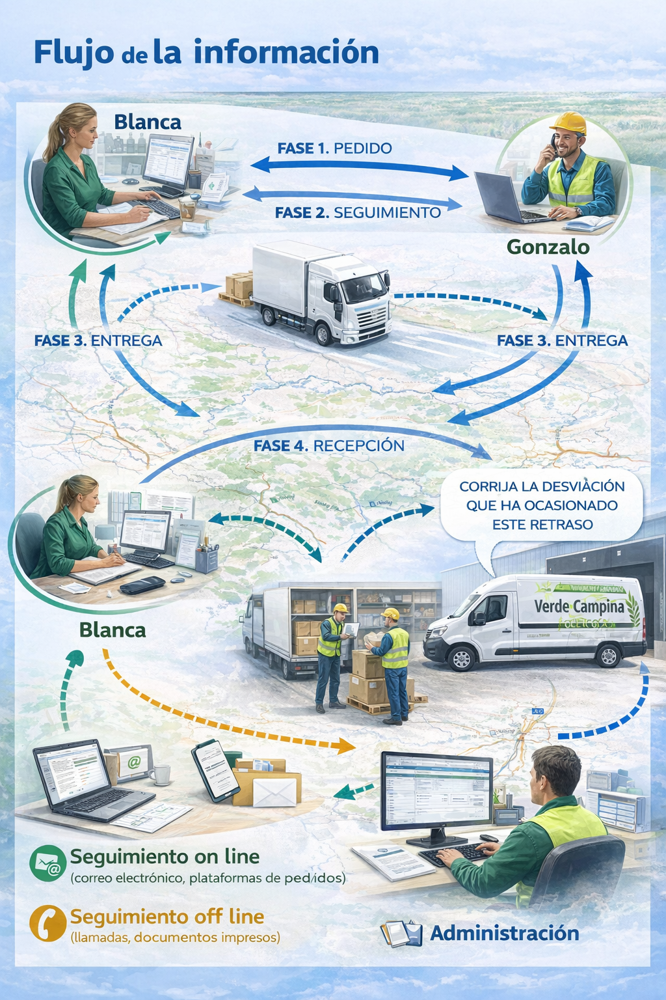
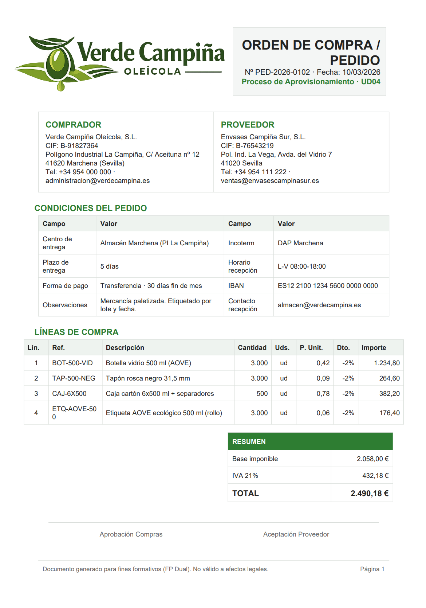
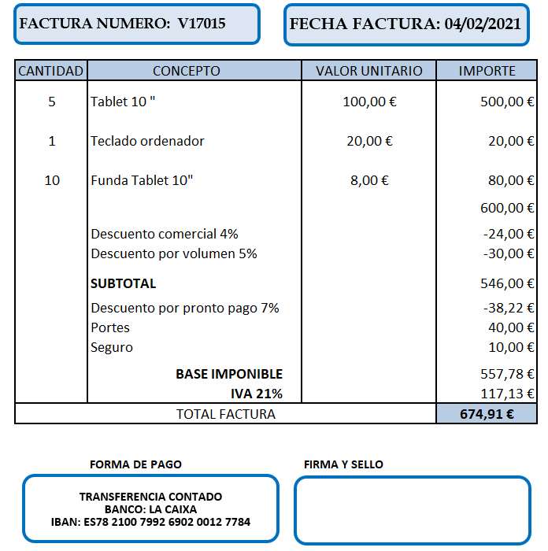
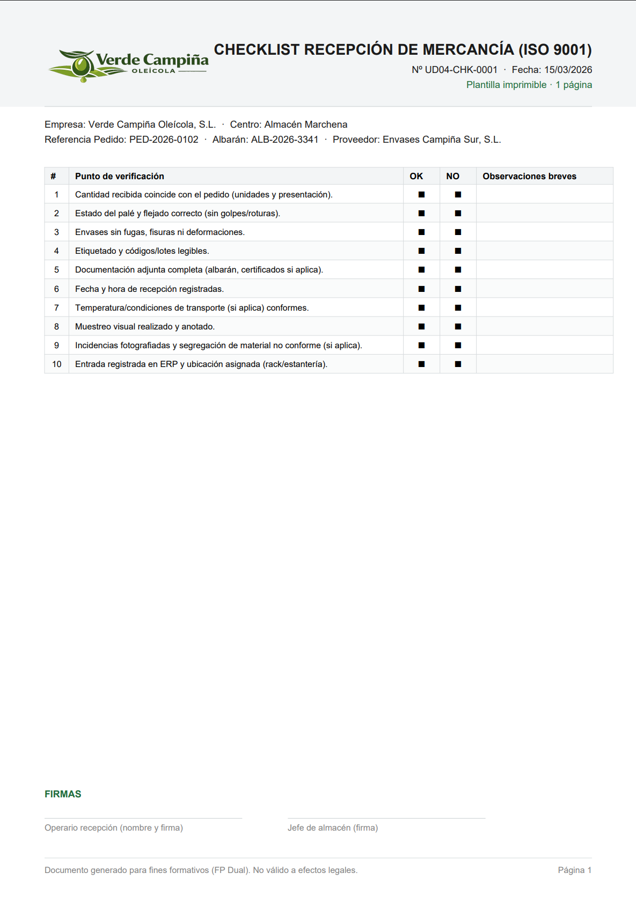

Unidad 4. Seguimiento y control de las variables de aprovisionamiento
Programación del Seguimiento y Control de las Variables del Aprovisionamiento.
Caso práctico
Blanca se acaba de incorporar al equipo de apoyo de Verde Campiña Oleícola, S.L. durante una campaña de envasado y distribución de aceite de oliva virgen extra. En los últimos días, la empresa ha realizado varios pedidos de botellas, tapones, etiquetas y cajas de cartón a distintos proveedores.
Rodrigo, encargado de coordinar el proceso, observa que algunas entregas no llegan en la fecha prevista y que en determinados pedidos existen diferencias entre las cantidades solicitadas y las recibidas. Además, parte de la documentación presenta errores que dificultan la comprobación de la mercancía.
Por su parte, Miguel, responsable del almacén, necesita verificar si los productos recibidos coinciden con el pedido y con el albarán, comprobar su estado, registrar correctamente la entrada de la mercancía y mantener la trazabilidad de los materiales desde su recepción hasta su uso o expedición. Al mismo tiempo, Gonzalo, como representante de uno de los proveedores, deberá responder a las incidencias detectadas y colaborar en su resolución.
Ante esta situación, Blanca se plantea varias cuestiones: ¿basta con emitir el pedido y esperar la llegada de la mercancía?, ¿qué controles deben realizarse durante el aprovisionamiento?, ¿cómo pueden detectarse a tiempo las incidencias?, ¿de qué manera se puede valorar si un proveedor está cumpliendo adecuadamente con lo acordado?
A lo largo de esta unidad se analizarán estas cuestiones para comprender cómo se realiza el seguimiento del aprovisionamiento, cómo se controla la documentación del proceso y cómo se evalúa el comportamiento de los proveedores en un entorno empresarial real.
Posibilidad de seguir el recorrido de un material o producto desde que entra en la empresa hasta que se utiliza, se almacena o se expide.
1. El proceso de aprovisionamiento.
En una empresa, el aprovisionamiento no termina cuando se emite un pedido. Para garantizar que la actividad se desarrolla con normalidad, resulta necesario comprobar que los materiales solicitados llegan en el momento previsto, en la cantidad adecuada, con la calidad esperada y acompañados de la documentación correspondiente.
Realizar un seguimiento adecuado del aprovisionamiento permite anticiparse a posibles incidencias, corregir desviaciones y asegurar que la empresa dispone de los recursos necesarios para mantener su actividad sin interrupciones. En el caso de Verde Campiña Oleícola, S.L., este control resulta especialmente importante durante las campañas de envasado y distribución, en las que cualquier retraso o error puede afectar al proceso productivo y a los compromisos de entrega con la clientela.
Caso práctico
Durante una nueva campaña de envasado, Blanca colabora con el equipo de Verde Campiña Oleícola, S.L. en el seguimiento de varios pedidos de botellas, tapones, etiquetas y cajas de cartón. Rodrigo, encargado de coordinar el proceso, detecta que algunas entregas no llegan en la fecha prevista y que existen diferencias entre las cantidades solicitadas y las recibidas.
Al mismo tiempo, Miguel, responsable del almacén, necesita comprobar si la mercancía recibida coincide con el pedido y con el albarán, revisar su estado y registrar correctamente la entrada de los productos. Por su parte, Gonzalo, como representante de uno de los proveedores, deberá responder a las incidencias detectadas y colaborar en su resolución.
Ante esta situación, Blanca se plantea varias cuestiones: ¿basta con emitir el pedido y esperar la llegada de la mercancía?, ¿qué controles deben realizarse durante el aprovisionamiento?, ¿cómo pueden detectarse a tiempo las incidencias?, ¿de qué manera se puede valorar si un proveedor está cumpliendo adecuadamente con lo acordado?
El seguimiento del aprovisionamiento consiste en supervisar de forma continua las operaciones relacionadas con el suministro de bienes necesarios para la actividad de la empresa. No se limita a realizar un pedido, sino que incluye también su comprobación, su control y la verificación de que todo se desarrolla conforme a lo previsto.
Este seguimiento permite conocer en cada momento:
- qué materiales se han solicitado
- a qué proveedor se ha realizado el pedido
- cuándo debe recibirse la mercancía
- en qué condiciones debe entregarse
- qué documentación acompaña al suministro
- si se han producido incidencias o desviaciones
Controlar el aprovisionamiento resulta esencial porque de este proceso dependen otras muchas actividades de la empresa. Si los materiales no llegan a tiempo, si se reciben cantidades incorrectas o si la documentación presenta errores, pueden producirse retrasos, sobrecostes y problemas de organización.
En Verde Campiña Oleícola, S.L., por ejemplo, un retraso en la llegada de botellas, tapones o etiquetas puede paralizar parcialmente el envasado del aceite. Del mismo modo, si las cajas de cartón llegan en mal estado o si existe una diferencia entre las unidades pedidas y las recibidas, será necesario registrar la incidencia, comunicarse con el proveedor y adoptar una solución adecuada.
Gasto adicional no previsto que se produce por errores, retrasos o cambios en el proceso.
Debes conocer
El seguimiento del aprovisionamiento permite controlar si los suministros se reciben en las condiciones pactadas y si la empresa dispone de los materiales necesarios para desarrollar su actividad con normalidad.
Reflexiona
Si una empresa realiza correctamente sus pedidos, pero no comprueba plazos, cantidades, estado de la mercancía ni documentación, ¿puede considerarse que está controlando adecuadamente su aprovisionamiento?
Autoevaluación
Solución
1.1.- Órdenes de pedido/entrega.
¿Cómo se prepara un pedido correctamente?
Antes de enviarlo, conviene seguir estos pasos:
Antes de enviar un pedido al proveedor, conviene comprobar que la necesidad está bien definida y que toda la información importante aparece con claridad. Un pedido mal preparado puede provocar errores en las cantidades, retrasos en la entrega o problemas al recibir la mercancía.
En Verde Campiña Oleícola, S.L., este control resulta esencial cuando se solicitan botellas, tapones, etiquetas o cajas de cartón, ya que cualquier error puede afectar al proceso de envasado y distribución.
- comprobar qué material hace falta realmente
- revisar la referencia o descripción correcta del producto
- confirmar la cantidad necesaria
- verificar el plazo de entrega acordado
- incluir las condiciones pactadas con el proveedor
- revisar todos los datos antes del envío
- registrar el pedido para poder hacer su seguimiento
¿Qué debe quedar claro en el pedido?
En una orden de pedido no deberían faltar estos datos:
- empresa compradora
- proveedor
- número y fecha del pedido
- producto o servicio solicitado
- referencia o código, si existe
- cantidad
- precio o condiciones económicas
- fecha y lugar de entrega
- forma de pago, si procede
- observaciones relevantes
Errores que conviene evitar
Antes de enviar un pedido, es importante evitar estos fallos:
- pedir un producto sin identificar bien la referencia
- indicar una cantidad incorrecta
- no dejar clara la fecha de entrega
- olvidar condiciones pactadas con el proveedor
- enviar el pedido sin revisarlo
Debes conocer
Un pedido bien preparado evita errores y facilita después la recepción, la comprobación de la entrega y la revisión de la factura.
Recomendación
Antes de pulsar “enviar”, conviene revisar siempre tres aspectos: producto correcto, cantidad correcta y fecha de entrega claramente indicada.
En el anexo I encontrarás el modelo de pedido que puede utilizar cualquier empresa. Podrás acceder a él a través del siguiente imagen.
1.2.- Recepción, identificación y verificación de pedidos.
Cuando llega un pedido a la empresa, no basta con descargar la mercancía y guardarla. Antes de aceptarla, conviene comprobar que los productos recibidos coinciden con lo solicitado, que llegan en buen estado y que la documentación es correcta.
En Verde Campiña Oleícola, S.L., esta revisión resulta especialmente importante cuando se reciben botellas, tapones, etiquetas o cajas de cartón, ya que cualquier error puede afectar al envasado, al almacenamiento o a la distribución posterior.

- comprobar qué pedidos se esperaban recibir
- recoger la documentación de llegada, especialmente el albarán
- verificar que el pedido recibido corresponde al proveedor esperado
- ordenar la descarga de la mercancía
- contar los artículos recibidos
- revisar si existen daños, desperfectos o errores visibles
- comparar la mercancía y el albarán con el pedido realizado
- anotar cualquier incidencia detectada
- registrar la entrada de la mercancía
- comunicar a compras cualquier problema que deba reclamarse al proveedor
¿Qué debe comprobarse en la recepción?
Antes de dar por correcta la entrega, conviene revisar estos aspectos:
- que el proveedor sea el correcto
- que el número de pedido coincida con el esperado
- que la descripción del producto sea correcta
- que la cantidad recibida coincida con la solicitada
- que la mercancía llegue en buen estado
- que no existan faltas, daños o errores de referencia
- que el albarán refleje correctamente la entrega
¿Qué hacer si aparece una incidencia?
Si al recibir la mercancía se detecta algún prOblema, no conviene aceptar la entrega sin dejar constancia.
En ese caso, deberá:
- anotarse la incidencia en el albarán
- registrarse la entrada con observaciones
- comunicarse el problema al departamento de compras
- conservar la documentación para una posible reclamación
Algunas incidencias frecuentes son:
- faltan unidades
- sobran unidades
- el producto recibido no coincide con el solicitado
- la mercancía llega dañada
- el albarán contiene errores
¿Qué información debe recoger el control de recepción?
Para que la recepción quede bien documentada, conviene registrar al menos estos datos:
- número de pedido
- cantidad recibida
- descripción del artículo
- nombre del proveedor
- unidad de medida
- observaciones sobre faltas, desperfectos o variaciones
- nombre y firma de la persona que recibe la mercancía
Debes conocer
La recepción es uno de los momentos más importantes del aprovisionamiento, porque permite detectar errores a tiempo y dejar constancia de lo que realmente ha llegado a la empresa.
Recomendación
Antes de aceptar una entrega, conviene comparar siempre pedido + albarán + mercancía recibida. Si uno de esos tres elementos no coincide, debe revisarse la operación antes de darla por correcta.
Reflexiona
1.3.- Seguimientos de Pedido.
¿Para qué sirve hacer el seguimiento de un pedido?
El seguimiento permite:
- comprobar si el pedido ha sido recibido por el proveedor
- confirmar la fecha prevista de entrega
- detectar posibles retrasos o incidencias
- corregir errores antes de que la mercancía llegue
- planificar mejor la recepción y el trabajo en almacén
¿Qué debe controlarse durante el seguimiento?
Durante el seguimiento de un pedido, conviene revisar estos aspectos:
- fecha de envío del pedido
- confirmación de recepción por parte del proveedor
- plazo de entrega acordado
- estado del pedido
- posibles cambios en cantidades o referencias
- incidencias comunicadas por el proveedor
- documentación asociada al suministro
¿Cómo puede hacerse el seguimiento?
El seguimiento puede realizarse de distintas formas, según el tipo de empresa y los medios disponibles. Lo más habitual es:
- consultar el pedido en la aplicación informática de gestión
- revisar correos electrónicos o comunicaciones del proveedor
- contactar telefónicamente para confirmar el estado del envío
- comprobar avisos de expedición o de entrega
- registrar cualquier cambio o incidencia detectada
¿Qué hacer si el pedido no va como estaba previsto?
Si durante el seguimiento se detecta un problema, conviene actuar cuanto antes. En ese caso, deberá:
- anotarse la incidencia detectada
- comprobar qué parte del pedido se ve afectada
- contactar con el proveedor para aclarar la situación
- informar al departamento de compras o a la persona responsable
- decidir si se mantiene la entrega, se reclama o se busca una alternativa
Algunas incidencias frecuentes durante el seguimiento son:
- retraso en la entrega
- falta de confirmación del proveedor
- modificación de la fecha prevista
- problemas en el transporte
- error en la referencia del producto
- entrega parcial del pedido
Caso práctico
Blanca revisa el estado de un pedido de cajas de cartón para Verde Campiña Oleícola, S.L. y comprueba que el proveedor no ha confirmado aún la expedición. Como la fecha de entrega está próxima, informa a Rodrigo y contacta con Gonzalo para comprobar si existe algún retraso. Gracias a esta revisión, la empresa detecta a tiempo la incidencia y puede reorganizar el trabajo previsto en almacén.
Debes conocer
Ejemplo práctico
Blanca revisa el estado de un pedido de cajas de cartón para Verde Campiña Oleícola, S.L. y comprueba que el proveedor no ha confirmado aún la expedición. Como la fecha de entrega está próxima, informa a Rodrigo y contacta con Gonzalo para comprobar si existe algún retraso. Gracias a esta revisión, la empresa detecta a tiempo la incidencia y puede reorganizar el trabajo previsto en almacén.El seguimiento de un pedido permite detectar incidencias antes de que la mercancía llegue a la empresa y facilita la organización de la recepción y del trabajo en almacén.
Recomendación
No conviene esperar al día de la entrega para comprobar si todo va bien. Revisar el estado del pedido con antelación ayuda a prevenir errores y a reaccionar a tiempo
Autoevaluación
1.4.- Control de Salidas.
¿Qué debe hacerse cuando salen productos del almacén?
Cuando los productos salen del almacén, no basta con prepararlos y enviarlos. Antes de la expedición, conviene comprobar que la mercancía seleccionada coincide con el pedido, que se encuentra en buen estado y que la documentación de salida es correcta.
En Verde Campiña Oleícola, S.L., este control resulta esencial para evitar errores en la entrega, reclamaciones de la clientela y problemas de trazabilidad.
¿Qué operaciones forman parte del control de salidas?
Antes de expedir la mercancía, conviene seguir este orden:
- localizar los productos en el almacén
- seleccionar las cantidades solicitadas
- trasladar la mercancía a la zona de preparación
- clasificar, empaquetar y etiquetar los productos
- comprobar que la mercancía coincide con el pedido
- revisar la documentación de salida
- registrar la expedición realizada
¿Qué debe comprobarse antes del envío?
Antes de dar salida a la mercancía, conviene revisar estos aspectos:
- que el producto preparado sea el correcto
- que la cantidad coincida con la solicitada
- que el embalaje y el etiquetado sean adecuados
- que la mercancía no presente daños o desperfectos
- que el albarán de salida esté correctamente cumplimentado
- que no exista ninguna incidencia pendiente de resolver
¿Qué documentos intervienen en la salida?
En el control de salidas suelen utilizarse, entre otros, estos documentos:
- pedido o preparación de expedición
- albarán de salida
- registro de salida
- documentos de transporte, si procede
¿Qué hacer si se detecta un problema antes de la expedición?
Si antes del envío se detecta una incidencia, conviene actuar antes de que la mercancía salga del almacén.
En ese caso, deberá:
- detener la salida de la mercancía afectada
- anotar la incidencia detectada
- comprobar qué parte del pedido está afectada
- informar a la persona responsable
- corregir el error antes de expedir la mercancía
¿Por qué es importante registrar la salida?
El registro de salida permite dejar constancia de la mercancía expedida, de las incidencias detectadas y, en su caso, de los productos rechazados. Gracias a ello, la empresa puede mantener la trazabilidad de la operación y justificar correctamente lo enviado.
- identificar qué mercancía ha salido
- comprobar cuándo se ha expedido
- conocer quién ha preparado o validado la salida
- dejar constancia de incidencias o rechazos
- facilitar futuras comprobaciones o reclamaciones
Reflexiona
1.5. Autoevaluación del Bloque 1
Autoevaluación
Solución
Autoevaluación
Solución
Autoevaluación
Solución
Autoevaluación
Solución
2.- Diagrama de flujo de la información: seguimiento on line y off line.
Caso práctico
Blanca comprueba que uno de los proveedores de Verde Campiña Oleícola, S.L. no podrá entregar a tiempo un pedido de cajas de cartón previsto para la campaña de envasado. Tras contactar con Gonzalo, representante del proveedor, confirma que la entrega se retrasará un día respecto al plazo acordado.
Blanca informa de la incidencia a Rodrigo, que le indica que deje constancia por escrito de lo ocurrido y solicite al proveedor una solución inmediata. Para ello, redacta un correo electrónico en el que comunica el retraso detectado, expresa el perjuicio que puede ocasionar a la empresa y pide una respuesta concreta para corregir la desviación.
Esta situación permite comprobar que, en el seguimiento del aprovisionamiento, no basta con detectar un problema: también es necesario comunicarlo, registrarlo y hacer un seguimiento de la respuesta del proveedor.

¿Qué se pretende conseguir con el seguimiento y el control? Cuando se realiza el seguimiento de un pedido, la empresa recopila información útil sobre:
- el cumplimiento de los plazos de entrega
- la exactitud de las cantidades suministradas
- la calidad de los productos recibidos
- las incidencias detectadas durante el proceso
- la respuesta del proveedor ante los problemas surgidos
Con estos datos, la empresa puede aplicar un control más eficaz y decidir si el proveedor está cumpliendo adecuadamente con lo acordado. ¿Para qué sirve el control del proveedor? El control permite corregir las desviaciones que se producen entre lo pactado y lo realmente entregado. Cuando aparece una incidencia, conviene:
- dejar constancia de lo ocurrido
- informar al proveedor por escrito
- solicitar una corrección o una respuesta concreta
- hacer seguimiento de la solución propuesta
- valorar si el problema ha quedado resuelto
Si una incidencia no se comunica ni se registra, será mucho más difícil reclamar después o justificar lo ocurrido. ¿Cómo circula la información en el aprovisionamiento? El flujo de información comienza cuando la empresa contacta con el proveedor y continúa durante todo el proceso: pedido, seguimiento, entrega, recepción, incidencias y control final. En este recorrido pueden intervenir distintas personas y departamentos:
- compras o la persona responsable del pedido
- el proveedor
- el transporte, si interviene
- almacén o recepción
- administración, cuando hay documentación o incidencias
Por eso resulta tan importante que la información esté clara, actualizada y bien registrada. ¿Cómo puede hacerse el seguimiento de la información? La información del aprovisionamiento puede seguirse de dos formas: Seguimiento off line Se realiza mediante medios no conectados en tiempo real, como por ejemplo:
- llamadas telefónicas
- correo ordinario
- documentos impresos
- anotaciones internas
Seguimiento on line Se realiza mediante herramientas digitales que permiten una consulta más rápida y actualizada, como por ejemplo:
- correo electrónico
- programas de gestión
- plataformas de seguimiento de pedidos
- sistemas informáticos compartidos
Actualmente, la mayor parte de las empresas combinan ambos sistemas, aunque el seguimiento on line permite controlar mejor la información en tiempo real.
Debes conocer
En el aprovisionamiento, detectar una incidencia no es suficiente. También es necesario comunicarla, registrarla y comprobar si el proveedor corrige la desviación detectada.
Recomendación
Cuando surja un problema con un pedido, conviene dejar siempre constancia por escrito. Un correo electrónico claro, enviado en el momento oportuno, puede ser decisivo para justificar la reclamación y acelerar la solución.
Autoevaluación
3.- Aplicaciones informáticas de gestión y seguimiento de proveedores.
Caso práctico
Caso práctico
En Verde Campiña Oleícola, S.L., Rodrigo comprueba que el sistema utilizado para registrar pedidos, incidencias y entregas de los proveedores se ha quedado limitado. Algunas consultas tardan demasiado, no siempre resulta fácil localizar la información y cuesta comparar el rendimiento de los distintos proveedores.
Por este motivo, la empresa estudia la posibilidad de incorporar una aplicación informática más completa que permita hacer un mejor seguimiento del aprovisionamiento. Blanca participa en la revisión de necesidades y analiza qué datos sería importante registrar para mejorar el control de pedidos, entregas, incidencias y documentación.
¿Todas las empresas utilizan las mismas aplicaciones informáticas?
No. Cada empresa utiliza las herramientas que mejor se adaptan a su actividad, a su tamaño y a la complejidad de su proceso de aprovisionamiento. No necesita el mismo sistema una pequeña empresa con pocos proveedores que una organización que realiza muchos pedidos, trabaja con distintos materiales y necesita controlar incidencias de forma continua.
¿Para qué sirve una aplicación informática en el seguimiento de proveedores?
Una aplicación informática puede ayudar a la empresa a:
- organizar e identificar a los proveedores
- registrar pedidos, entregas e incidencias
- consultar rápidamente el estado de un pedido
- comprobar si se están cumpliendo los plazos acordados
- comparar el comportamiento de distintos proveedores
- detectar desviaciones o incumplimientos
- facilitar la toma de decisiones
¿Qué información conviene registrar?
Para que la herramienta resulte útil, conviene que permita guardar y consultar información como la siguiente:
- datos identificativos del proveedor
- pedidos realizados
- fechas previstas y reales de entrega
- cantidades solicitadas y recibidas
- incidencias detectadas
- documentación asociada: pedido, albarán y factura
- valoraciones o resultados del seguimiento
¿Qué características debería tener una buena aplicación?
Una herramienta informática de seguimiento de proveedores debería ser capaz de:
- adaptarse a las características de la empresa
- permitir un seguimiento claro y actualizado
- ayudar a detectar errores o retrasos
- sugerir o facilitar medidas correctoras
- mejorar la coordinación entre compras, almacén y administración
- hacer más ágil la gestión documental
¿Qué ventajas aporta a la empresa?
Cuando la información está bien organizada y actualizada, la empresa puede trabajar con más seguridad, reaccionar antes ante los problemas y evaluar mejor a sus proveedores. Además, se reducen errores, se gana tiempo en las consultas y se facilita el control del aprovisionamiento.
Diferencia entre lo que se había previsto y lo que realmente ocurre.
Debes conocer
Una aplicación informática útil no solo almacena información: también ayuda a seguir pedidos, registrar incidencias, controlar documentación y valorar si un proveedor está cumpliendo adecuadamente.
Recomendación
Antes de implantar una nueva herramienta, conviene definir bien qué necesita controlar la empresa. Cuanto más claro esté el objetivo, más fácil será elegir una aplicación realmente útil.
Para saber más
En el siguiente enlace puedes encontrar información sobre FactuSol 2025:
4.- Ratios de Control y Gestión de proveedores.
Caso práctico
En Verde Campiña Oleícola, S.L., Blanca y Rodrigo quieren comparar el comportamiento de los proveedores durante esta campaña con el de periodos anteriores. Para ello, necesitan un sistema que les permita medir retrasos, incidencias y nivel de cumplimiento, y así detectar qué proveedores están funcionando bien y cuáles deben mejorar.
La empresa no quiere basarse solo en impresiones generales. Necesita datos concretos que permitan analizar la evolución del servicio prestado y tomar decisiones con mayor seguridad.
¿Para qué sirve utilizar ratios?
Un ratio permite comparar dos datos y obtener una información más útil que una cifra aislada. Gracias a ello, la empresa puede evaluar de forma más clara el comportamiento de sus proveedores y comprobar si la situación mejora, empeora o se mantiene estable con el tiempo.
En la gestión de proveedores, los ratios ayudan a:
- detectar incumplimientos de plazos o cantidades
- comparar proveedores entre sí
- analizar la evolución de un mismo proveedor en distintos periodos
- tomar decisiones con datos y no solo con impresiones
- identificar problemas que se repiten con frecuencia
¿Qué debe registrarse antes de calcular ratios?
Para que los resultados sean útiles, es necesario que la empresa registre correctamente la información relacionada con los proveedores. En especial, conviene anotar:
- pedidos realizados
- fechas previstas y reales de entrega
- cantidades solicitadas y recibidas
- incidencias detectadas
- reclamaciones realizadas
- gravedad o tipo de cada incidencia
¿Qué tipos de incidencias conviene clasificar?
Antes de evaluar a un proveedor, conviene ordenar las incidencias según su tipología. Algunas de las más frecuentes son:
- retraso en la entrega
- incumplimiento de la cantidad pedida
- entrega incorrecta
- mala calidad del material
- errores en la documentación
- incidencias graves o reiteradas
Ratios sencillos que puede utilizar la empresa
Cada empresa debe elegir los ratios que más le ayuden a controlar a sus proveedores. En Verde Campiña Oleícola, S.L. podrían utilizarse, por ejemplo, los siguientes:
- Ratio de entregas en plazo: pedidos entregados a tiempo / pedidos totales
- Ratio de incidencias: incidencias registradas / pedidos totales
- Ratio de cumplimiento de cantidades: pedidos correctamente servidos / pedidos totales
- Ratio de reclamaciones: reclamaciones realizadas / pedidos totales
¿Por qué conviene comparar varios periodos?
Un ratio resulta más útil cuando se compara con otros periodos. De este modo, la empresa puede comprobar si el proveedor ha mejorado, si mantiene el mismo nivel de servicio o si está empeorando.
Por eso, no conviene hacer una valoración estática o aislada. Lo más útil es analizar la evolución de los resultados en distintos meses, campañas o ejercicios.
¿Qué se hace con los resultados obtenidos?
Una vez calculados los ratios, la empresa puede:
- valorar si el proveedor cumple adecuadamente
- compararlo con otros proveedores
- detectar puntos débiles en el servicio prestado
- proponer medidas de mejora
- decidir si conviene mantener, corregir o revisar la relación comercial
Debes conocer
Un ratio no sirve por sí solo si la empresa no registra bien los datos o no compara los resultados con otros periodos. Su utilidad depende de la calidad de la información y del análisis posterior.
Recomendación
No conviene utilizar muchos ratios si luego no se interpretan bien. Es preferible trabajar con pocos indicadores, pero que sean claros, útiles y fáciles de comparar.
4.1 Supuesto práctico
Caso práctico
Verde Campiña Oleícola, S.L. quiere revisar varios indicadores clave de su gestión de compras y aprovisionamiento para comprobar si está trabajando con eficiencia y dentro de los límites de control esperados. Durante el último periodo, la empresa ha analizado la operativa relacionada con la compra de garrafas de plástico de 5 litros y dispone de los siguientes datos:
- Compras totales: 65.000 unidades
- Compras realizadas al proveedor principal, Envaplast Sur, S.L: 35.000 unidades
- Precio unitario presupuestado: 0,50 €
- Precio unitario real: 0,51 €
- Número total de pedidos: 60
- Coste de gestión por pedido: 1,20 €
- Deuda actual con proveedores: 15.000 €
Ejercicio Resuelto
Verde Campiña Oleícola, S.L. quiere revisar varios indicadores clave de su gestión de compras y aprovisionamiento para comprobar si está trabajando con eficiencia y dentro de los límites de control esperados. Durante el último periodo, la empresa ha analizado la operativa relacionada con la compra de garrafas de plástico de 5 litros y dispone de los siguientes datos:
- Compras totales: 65.000 unidades
- Compras realizadas al proveedor principal, Envaplast Sur, S.L: 35.000 unidades
- Precio unitario presupuestado: 0,50 €
- Precio unitario real: 0,51 €
- Número total de pedidos: 60
- Coste de gestión por pedido: 1,20 €
- Deuda actual con proveedores: 15.000 €
La dirección quiere saber si existe una dependencia excesiva del proveedor principal, si se ha producido una desviación relevante en el precio, si el coste operativo de gestión de pedidos es adecuado y si el periodo medio de pago se encuentra en una situación aceptable. Actividad A partir de los datos anteriores, realiza las siguientes tareas:
- calcula el ratio de dependencia de proveedores
- calcula la desviación de precios
- calcula el ratio de eficacia operativa
- calcula el periodo medio de pago
5.- Indicadores de Calidad y Eficacia Operativa en la Gestión de Proveedores.
Caso práctico
En Verde Campiña Oleícola, S.L., Blanca y Rodrigo ya han revisado los ratios básicos de control de proveedores, pero quieren ir un paso más allá. No les basta con saber cuántos pedidos se han hecho o cuántas incidencias se han producido. Necesitan comprobar también si los proveedores están entregando con calidad, si cumplen los plazos y si el servicio recibido es realmente eficaz.
Para ello, deciden establecer varios indicadores de calidad y eficacia operativa que les permitan revisar de forma periódica el comportamiento de los proveedores y detectar con rapidez posibles problemas en el aprovisionamiento.
¿Para qué sirven los indicadores?
No basta con tener datos sueltos sobre pedidos, retrasos o incidencias. Para poder valorar si un proveedor trabaja bien, conviene utilizar indicadores que permitan medir el servicio prestado de forma periódica y compararlo con lo esperado. Un indicador es una medida, normalmente expresada en forma de porcentaje o valor numérico, que ayuda a comprobar si un proceso está funcionando correctamente y facilita la toma de decisiones. En la gestión de proveedores, los indicadores sirven para:
- comprobar si las entregas se realizan en plazo
- detectar pedidos con incidencias o errores
- valorar si la mercancía recibida cumple los requisitos de calidad
- comparar resultados entre distintos proveedores o periodos
- tomar decisiones de mejora con mayor seguridad
Debes conocer
Los indicadores no sustituyen al análisis del proveedor, pero ayudan a valorar su comportamiento con datos objetivos y comparables.
¿Qué indicadores conviene utilizar?
Cada empresa debe seleccionar los indicadores que mejor se adapten a su actividad, pero en el seguimiento del aprovisionamiento suelen resultar especialmente útiles los siguientes:
- Entregas a tiempo: porcentaje de pedidos recibidos en el plazo acordado
- Entregas completas: porcentaje de pedidos recibidos sin faltas ni diferencias en cantidades
- Calidad en la entrega: porcentaje de pedidos recibidos sin incidencias
- Nivel de cumplimiento del proveedor: porcentaje de pedidos que cumplen lo pactado en plazo y condiciones
Estos indicadores permiten comprobar, por ejemplo, si un proveedor suele retrasarse, si entrega correctamente la mercancía o si genera demasiadas incidencias. Para saber más Asociaciones profesionales y organizaciones del sector, como AECOC, ofrecen orientaciones y buenas prácticas para mejorar la gestión logística, la calidad del servicio y el intercambio de información entre empresas.

5.1 Supuesto práctico
Ejercicio resuelto
Seguimos analizando el aprovisionamiento de las garrafas de plástico de 5 litros. Durante el último periodo, Verde Campiña Oleícola, S.L. ha registrado los siguientes datos:
- Se han generado 60 pedidos
- 10 pedidos han presentado algún tipo de incidencia
- Se han emitido 60 órdenes de compra
- 2 pedidos han sido rechazados por no ajustarse a lo contratado
- 5 pedidos han llegado con retraso
- calidad de los pedidos
- entregas perfectamente recibidas
- nivel de cumplimiento del proveedor
Reflexiona
¿Cómo interpretarías estos resultados?
Interpretación de los resultados
- Recepción de entregas: 96,67 %. Nivel excelente. La mayoría de los pedidos han sido recibidos correctamente y sin rechazo.
- Cumplimiento de plazos: 91,67 %. Nivel fuerte. El proveedor cumple en plazo en la mayoría de los casos, aunque todavía existe margen de mejora.
- Calidad sin incidencias: 83,33 %. Área crítica de mejora. El número de incidencias sigue siendo elevado y conviene aplicar medidas correctoras.
En conjunto, el proveedor presenta un comportamiento aceptable, con resultados buenos en recepción y plazos, pero con una debilidad clara en la calidad sin incidencias.
6.- Documentación del Proceso de Aprovisionamiento.
Caso práctico
¿Qué documentos van apareciendo en el proceso de aprovisionamiento de la empresa?
En Verde Campiña Oleícola, S.L., el proceso no empieza directamente con el pedido. Antes, el almacén o la persona responsable detecta qué materiales hacen falta para continuar con normalidad la campaña de envasado y distribución.
A partir de ahí, van apareciendo distintos documentos que permiten dejar constancia de lo que se necesita, de lo que se solicita al proveedor, de lo que realmente llega a la empresa y de lo que finalmente se paga.
- Necesidad de compra: Miguel comunica que faltan botellas, tapones o cajas de cartón para atender la producción prevista.
- Consulta a proveedores: Rodrigo solicita precios, plazos de entrega y condiciones a varios proveedores.
- Oferta recibida: la empresa recibe la propuesta comercial del proveedor con precios, cantidades y condiciones.
- Pedido: Blanca prepara y envía la orden de compra con los productos, referencias y cantidades que se necesitan.
- Entrega: cuando la mercancía sale de las instalaciones del proveedor, puede recibirse un aviso de expedición y, al llegar, el albarán de entrega.
- Recepción y control: Miguel comprueba la mercancía recibida, revisa cantidades, estado y documentación, y anota cualquier incidencia.
- Factura: administración recibe la factura y comprueba que coincide con el pedido y con el albarán.
- Registro: la empresa deja constancia de la operación en sus documentos de control y trazabilidad para poder hacer seguimiento posterior.
Idea clave: en el aprovisionamiento no aparece un único documento, sino varios, y cada uno ayuda a controlar una parte distinta del proceso.
Espacio físico, normalmente en una estantería o zona de exposición, donde se colocan productos para su venta
¿Qué documentos aparecen en el proceso de aprovisionamiento?
En el aprovisionamiento suelen aparecer varios documentos desde que se realiza el pedido hasta que se recibe la mercancía y se revisa el pago. Cada uno tiene una función específica y ayuda a controlar mejor el proceso.
¿Cuáles son los más habituales?
- pedido, para solicitar los productos al proveedor
- albarán, para comprobar la entrega de la mercancía
- factura, para justificar el importe a pagar
- registro de entrada, para dejar constancia de lo recibido
- hoja de control o checklist de recepción, para revisar cantidades, estado e incidencias
- comunicación de incidencia o reclamación, cuando aparece algún problema

Para saber más
Idea clave: los documentos del aprovisionamiento permiten controlar, comprobar y dejar constancia de cada fase del proceso.
Debes realizar un seguimiento del pedido, sobre todo en lo referente al plazo de entrega del proveedor, para conocer en qué estado se encuentra, en todo momento.
Debes conocer
¿Qué diferencia existe entre un albarán valorado y un albarán sin valorar?
No todos los albaranes muestran la misma información económica. En la práctica, pueden encontrarse dos tipos:
Albarán sin valorar: recoge los productos entregados, sus referencias, cantidades y número de bultos, pero no incluye precios ni importes. Se utiliza sobre todo para comprobar la entrega física de la mercancía.
Albarán valorado: además de los productos y cantidades, incluye precios unitarios e importes. Resulta útil cuando se quiere dejar constancia también del valor económico de la entrega.
¿Cuál de los dos es más útil?
Depende del objetivo. Si lo que se quiere es comprobar la entrega física, el albarán sin valorar suele ser suficiente. Si además interesa revisar desde el primer momento el valor económico de la mercancía, puede utilizarse un albarán valorado.
En cualquier caso, el albarán no sustituye a la factura. Su función principal sigue siendo acreditar la entrega y facilitar la comprobación de la mercancía recibida.
6.1. Pedido
Caso práctico
En Verde Campiña Oleícola, S.L., el pedido resulta fundamental para asegurar que botellas, tapones, etiquetas o cajas de cartón lleguen en el momento oportuno y en las condiciones esperadas. Si este documento se prepara mal, pueden aparecer errores en la entrega, en la recepción o en la factura.
Ejemplo aplicado
Blanca prepara un pedido de 1.200 botellas de vidrio oscuro y 1.200 tapones para una nueva campaña de envasado. Antes de enviarlo, revisa con Rodrigo la referencia exacta del producto, confirma la cantidad necesaria y comprueba la fecha de entrega pactada con el proveedor.
¿Qué debe reflejar un pedido? 
{kind=link}
¿Qué es el pedido y para qué sirve?
El pedido, también llamado en algunos casos nota de pedido, es el documento mediante el cual la empresa solicita al proveedor los productos que necesita. En él deben quedar claras las cantidades, las referencias, las condiciones acordadas y la fecha prevista de entrega.
- la identificación de la empresa compradora
- la identificación del proveedor
- el número y la fecha del pedido
- la descripción del producto solicitado
- la referencia o código del artículo, si existe
- la cantidad pedida
- el precio o las condiciones económicas pactadas
- la fecha y el lugar de entrega
- las observaciones o condiciones especiales
¿Por qué es importante revisarlo antes de enviarlo?
Antes de enviar un pedido, conviene comprobar que toda la información es correcta. Un error en la referencia, en la cantidad o en la fecha de entrega puede provocar incidencias posteriores y dificultar el control del aprovisionamiento.
Idea clave: el pedido es el documento que inicia formalmente la compra y sirve de base para comprobar después si el proveedor ha cumplido lo acordado.
Ejercicio Resuelto
Actividad: elaboración de una orden de compra o pedido
Verde Campiña Oleícola, S.L., con domicilio en Polígono Industrial La Campiña, parcela 12, 41620 Marchena (Sevilla) y NIF B-41876543, se encuentra preparando una nueva campaña de envasado de aceite de oliva virgen extra.
Tras revisar las existencias disponibles, se ha detectado la necesidad de reponer varios materiales de envasado y expedición. Para ello, la empresa va a realizar un pedido a su proveedor habitual, Envaplast Sur, S.L., con domicilio en Polígono El Pino, calle Metalurgia, nave 8, 41016 Sevilla y NIF B-91234567.
Datos para elaborar el pedido
- Número de pedido: PED-2026-0102
- Fecha del pedido: 15/03/2026
- Fecha prevista de entrega: 22/03/2026
- Lugar de entrega: Almacén de Verde Campiña Oleícola, S.L., Polígono Industrial La Campiña, parcela 12, 41620 Marchena (Sevilla)
- Forma de pago: transferencia bancaria a 60 días fecha factura
- Transporte: a cargo del proveedor
Materiales solicitados
- 1.200 botellas de vidrio oscuro de 500 ml, referencia BOT-500-VD, a 0,42 € la unidad
- 1.200 tapones irrellenables, referencia TAP-IR-500, a 0,09 € la unidad
- 1.200 etiquetas adhesivas para aceite de oliva virgen extra, referencia ETQ-AOVE-500, a 0,06 € la unidad
- 150 cajas de cartón para 8 botellas, referencia CAJ-8BOT, a 1,85 € la unidad
Observaciones
- La mercancía deberá entregarse correctamente embalada y etiquetada.
- Se ruega incluir albarán detallado con referencias y cantidades.
- Cualquier incidencia en el plazo o en la disponibilidad del material deberá comunicarse antes de la fecha prevista de entrega.
Lo que se pide
Con la información anterior, elabora la orden de compra o pedido de forma clara, ordenada y profesional, de manera que pueda enviarse al proveedor.
El documento deberá incluir, al menos:
- datos de la empresa compradora
- datos del proveedor
- número y fecha del pedido
- fecha y lugar de entrega
- descripción de los artículos solicitados
- referencias de los productos
- cantidades, precios unitarios e importe
- forma de pago
- observaciones de entrega
Reflexiona
¿Qué información debería aparecer obligatoriamente en una nota de pedido para que el proveedor pueda atender correctamente la compra?
6.2- Albarán
Caso práctico
En Verde Campiña Oleícola, S.L., el albarán resulta fundamental para revisar si las botellas, tapones, etiquetas o cajas de cartón entregadas coinciden con las cantidades pedidas, si han llegado en buen estado y si la documentación es correcta.
Miguel recibe en el almacén un envío de 150 cajas de cartón y 1.200 botellas para la campaña de envasado. En el albarán aparecen 18 bultos. Antes de firmar la recepción, comprueba que han llegado todos los paquetes, que las cantidades coinciden con el pedido y que no existen daños visibles en la mercancía. Además, revisa si el documento recibido es un albarán valorado o sin valorar, ya que eso condiciona la información económica que puede comprobar en ese momento.
¿Qué información suele aparecer en un albarán?
¿Qué es el albarán y para qué sirve?
El albarán es el documento que acompaña a la mercancía cuando llega a la empresa. Su función principal es dejar constancia de lo que el proveedor entrega y permitir que la empresa compruebe si la recepción coincide con lo solicitado en el pedido.
- datos del proveedor y del cliente
- número y fecha del albarán
- referencia del pedido, si consta
- descripción de los productos entregados
- cantidades recibidas
- número de bultos
- observaciones sobre la entrega
- firma o conformidad, si procede
¿Qué debe comprobarse cuando llega un albarán?
- que el proveedor sea el correcto
- que la fecha de entrega sea la prevista o cercana a ella
- que las referencias coincidan con las del pedido
- que las cantidades entregadas se ajusten a lo solicitado
- que el número de bultos sea correcto
- que la mercancía llegue en buen estado
- que cualquier incidencia quede anotada antes de firmar la recepción
Idea clave: el albarán sirve para comprobar la entrega real de la mercancía. Permite verificar productos, cantidades, número de bultos y posibles incidencias antes de aceptar definitivamente la recepción.
Debes conocer
¿Por qué es importante el número de bultos?
El número de bultos ayuda a comprobar si la entrega está completa desde el primer momento. Antes incluso de abrir la mercancía, permite verificar si han llegado todos los paquetes, cajas o palés previstos. Si el número de bultos no coincide, ya existe una señal de que puede haber una incidencia en la entrega.
Por eso, en la recepción de mercancías conviene revisar no solo el contenido del albarán, sino también si el número de bultos entregados coincide con lo esperado y con lo que realmente se descarga.
¿Qué diferencia existe entre un albarán valorado y un albarán sin valorar?
No todos los albaranes muestran la misma información económica. En la práctica, pueden encontrarse dos tipos:
- Albarán sin valorar: recoge los productos entregados, sus referencias, cantidades y número de bultos, pero no incluye precios ni importes. Se utiliza sobre todo para comprobar la entrega física de la mercancía.
- Albarán valorado: además de los productos y cantidades, incluye precios unitarios e importes. Resulta útil cuando se quiere dejar constancia también del valor económico de la entrega.
¿Cuál de los dos es más útil?
Depende del objetivo. Si lo que se quiere es comprobar la entrega física, el albarán sin valorar suele ser suficiente. Si además interesa revisar desde el primer momento el valor económico de la mercancía, puede utilizarse un albarán valorado.
En cualquier caso, el albarán no sustituye a la factura. Su función principal sigue siendo acreditar la entrega y facilitar la comprobación de la mercancía recibida.
6.2.1 Supuesto práctico
Ejercicio Resuelto
Actividad: elaboración de albarán valorado y albarán sin valorar
Una vez emitido el pedido PED-2026-0102 a Envaplast Sur, S.L., la mercancía llega al almacén de Verde Campiña Oleícola, S.L. para su recepción y comprobación.
Utilizando los datos del pedido anterior, debes elaborar dos documentos distintos:
- un albarán sin valorar
- un albarán valorado
Condiciones de la entrega
- Número de albarán: ALB-2026-3341
- Fecha de entrega: 22/03/2026
- Proveedor: Envaplast Sur, S.L.
- Cliente: Verde Campiña Oleícola, S.L.
- Lugar de entrega: Almacén central de Verde Campiña Oleícola, S.L., Polígono Industrial La Campiña, parcela 12, 41620 Marchena (Sevilla)
- Transporte: a cargo del proveedor
- Número de bultos: 18
Mercancía entregada
- 1.200 botellas de vidrio oscuro de 500 ml, referencia BOT-500-VD, a 0,42 € la unidad
- 1.200 tapones irrellenables, referencia TAP-IR-500, a 0,09 € la unidad
- 1.200 etiquetas adhesivas para aceite de oliva virgen extra, referencia ETQ-AOVE-500, a 0,06 € la unidad
- 150 cajas de cartón para 8 botellas, referencia CAJ-8BOT, a 1,85 € la unidad
Lo que se pide
A partir de estos datos, elabora:
- un albarán sin valorar, en el que aparezcan los datos de identificación, la mercancía entregada, las cantidades, las referencias y el número de bultos, pero sin precios ni importes
- un albarán valorado, en el que aparezcan además los precios unitarios y los importes de cada línea
En ambos documentos deberán figurar, al menos:
- los datos del proveedor y del cliente
- el número y la fecha del albarán
- la referencia del pedido relacionado
- la descripción de los productos entregados
- las cantidades recibidas
- el número de bultos
- un espacio para observaciones
- un espacio para la firma o conformidad de recepción
Importante: la presentación del documento debe ser clara, ordenada y legible. Ningún apartado debe quedar solapado ni oculto, y la información más importante debe poder leerse con facilidad.
6.3.- Facturas.
Alguna vez te habrás preguntado: ¿Qué es la factura? ¿Quién la emite? ¿Es un documento obligatorio? ¿Puedo emitir duplicados?
De todos los documentos generados en el proceso de aprovisionamiento, el único obligatorio es la factura, los demás se realizarán para llevar a cabo un seguimiento, controlar y mejorar el proceso.
La factura es un documento que expide el vendedor a cargo del comprador y que acredita legalmente la compra-venta o prestación de servicios.
Los requisitos de la facturan están recogidos en el Código de Comercio, la Ley y el Reglamento del IVA y establecen que los empresarios y profesionales están obligados a expedir y entregar factura u otros justificantes por las operaciones que realicen y también a conservar las mismas.
Para saber más
En el siguiente enlace aprenderás los plazos legales estipulados para conservar las facturas
Respecto al momento de emisión, las facturas deben emitirse en los siguientes plazos:
- En el momento de la operación: cuando el destinatario sea un consumidor final.
- En el plazo máximo de 30 días naturales: cuando se trate de un empresario o profesional.
- El último día del mes cuando se facture por meses.
El vendedor solo puede expedir un original de cada factura o justificante de pago, pero puede emitir duplicados cuando la situación lo requiera, anotando la expresión "duplicado" en el motivo por el que se realiza.
Factura electrónica (e-factura): es un archivo electrónico que puede ser objeto de transmisión o almacenamiento de forma telemática y que posee firma digital.
Para saber más
En el siguiente enlace tienes una completa página sobre la factura electrónica. Verás qué es, cómo se utiliza y muchas más cuestiones relacionadas con esta modalidad de factura.
Factura Pro-Forma: es un Documento que refleja los datos de una Oferta Comercial antes de que se produzca la operación. Este tipo de factura es utilizada en las operaciones internacionales, la emite el exportador para que el importador pueda solicitar la licencia de importación, la apertura de un crédito documentario o la obtención de divisas para efectuar el pago de la compraventa.
Ejercicio resuelto
Realiza el albarán valorado nº AV-305 y el albarán sin valorar nº AS-305, correspondiente a la orden de compra del apartado anterior.
Ejercicio resuelto
Realizamos a Envases del Sur, S.L. de Córdoba, Avenida Gran Capital 32, 14.005. CIF A-14.789456, el pedido nº 305, de fecha 22 de enero de 20XX, según el contrato de referencia nº 210:
- 200 latas de ½ litro par envasar aceite, referencia L-05.
- Precio: 0,50€ /unidad.
- Descuento por volumen de compras: 2% .
- Gastos de transportes: a cargo del vendedor.
- Plazo de entrega: 5 días fecha recepción.
- Lugar entrega: en nuestros almacenes, Polígono el Pino.
- Plazo de pago: 30 días recepción del pedido.
- Persona de contacto: Juana Jiménez Suarez.
Debes conocer
En el siguiente enlace podrás ver un ejemplo de un albarán sin valorar.
Y en este un ejemplo de albarán valorado.
tanto en el albarán valorado, como en el sin valorar se debe indicar el número de bultos para cotejar si es correcta la entrega.
6.3.1.- Contenido de la Factura.
¿Qué datos crees que debe contener una factura? ¿Todos estos datos son obligatorios? Toda factura debe contener:
- Número de la factura, que deberá ser correlativa. Podrán establecerse series diferentes, especialmente cuando existan diversos centros de facturación.
- Datos del proveedor: nombre y apellidos o razón social, dirección, teléfono y fax, correo electrónico, NIF o CIF.
- Datos del cliente: nombre y apellidos o razón social, dirección, teléfono y fax, correo electrónico, NIF o CIF .
- Descripción de la operación y su contraprestación total: cantidad, precio, descuentos, gastos adicionales, etc. La factura deberá contener la indicación de la unidad de cuenta que se utiliza, sean euros u otras subdivisiones del euro u otras divisas distintas del mismo. Todas las cantidades de la factura estarán expresadas en la misma unidad monetaria en la que se indica la contraprestación total.
- Base imponible, tipo impositivo y cuota. Cuando la cuota del Impuesto sobre el Valor Añadido se repercuta dentro del precio, se indicará la expresión "IVA incluido", si así está autorizado. Si la factura comprende entregas de bienes o prestaciones de servicios sujetas a tipos impositivos diferentes en este impuesto, deberá diferenciarse la parte de la base imponible sujeta a cada tipo y la cuota impositiva resultante.
- Importe líquido de la factura o importe a pagar.
- Lugar y fecha de su emisión.
Debes conocer
Si consultas el siguiente enlace accederás a un documento explicativo sobre la Base Imponible. También lo encontrarás en el anexo VII.
Y en este enlace ampliarás tus conocimientos sobre el concepto de tipo impositivo.
Para saber más
En el siguiente enlace podrás comprobar los diferentes modelos de facturas que hay.
Y en este enlace un modelo concreto de factura.
Debes conocer
En el siguiente enlace encontraras información sobre la Ley del IVA.
Impuesto sobre el Valor Añadido.
Y en este el reglamento que la desarrolla.
6.3.2.- Realización de la factura.
¿Cómo piensas que debes realizar la factura? En la factura, deben figurar todos los detalles de la operación a la que pertenece. A la hora de obtener el importe total de la factura, tienes que considerar el importe bruto de cada artículo, los descuentos aplicados, los gastos a cargo del comprador, los tipos de IVA que corresponde a cada producto, el Recargo de Equivalencia (si lo hay).
- El importe bruto es el resultado de multiplicar las cantidades de cada artículo por su precio unitario.
- Los descuentos son las bonificaciones o rebajas que se aplican sobre el valor de los productos. Los descuentos más generales que puedes aplicar en una factura son:
- El descuento comercial es un porcentaje a calcular sobre el importe de cada artículo o sobre la suma de los importes si todos tienen el mismo %.
- El descuento por volumen de compras o rappel, puede ser una cantidad global o un %, que se aplica a la base imponible.
- El descuento por pronto pago se calcula sobre el importe líquido, una vez deducidos los descuentos comerciales y por volumen, si los hay. Es el único descuento que se aplica a la cantidad ya minorada por otros descuentos.
- Las unidades bonificadas, estas unidades siempre se las debes incluir en la factura aunque sean gratis, pues hay que tenerlas en cuenta a la hora de preparar el envío.
- Los gastos a cargo del comprador suponen un incremento en el importe de la compra. Los más habituales son:
-
- Envases y embalajes. Se diferencian dos tipos: reutilizables, es decir, los puedes devolver y los no reutilizable.
- Portes, son los gastos que origina el traslado de la mercancía hasta el lugar elegido por el comprador. Cuando se incluyen en factura forman parte de la base imponible el IVA y tributan al mismo tipo impositivo que el producto al que pertenecen.
- Seguros, es un gasto que suele estar ligado al transporte, pues su función es cubrir los riesgos que pueda sufrir los productos durante el traslado. Los seguros son una actividad exenta del IVA, pero cuando se incluyen en factura se aplica sobre ellos el mismo tipo impositivo de los productos a los que pertenece.
Para calcular el importe total de la factura debes proceder de la siguiente forma:
Importe total factura =

Ejercicio resuelto
Realiza la factura nº Fr-305, correspondiente al albarán del ejercicio anterior.
6.3.3.- Documentos sustitutivos de las Facturas.
Quizás te hayas pregunta alguna vez ¿existe alguna circunstancia en la que puedo cambiar la factura por otro documento que justifique una compra? Si, hay determinadas circunstancias en las que es posible cambiar la factura por otro documento que la sustituye. Cuando el comprador es un consumidor, que no actúa como comerciante o empresario lo normal es que el vendedor le entregue el ticket de caja. Cuando el importe de las operaciones que a continuación se describen no excedan de 3.006 €, las facturas pueden ser sustituidas por tickets expedidos por máquinas registradoras:
- Ventas al por menor.
- Servicios en ambulancia.
- Servicios a domicilio del consumidor.
- Transportes de personas y sus equipajes.
- Servicios postales, en restaurantes, bares, cafeterías y establecimientos similares.
- Suministros de comidas y bebidas para consumir en el acto.
- Servicios prestados en salas de baile y discotecas.
No obstante, el vendedor o profesional está obligado a emitir factura cuando el destinatario de la operación así lo exija.
El ticket de venta debe contener los siguientes datos:
- Nombre o razón social del vendedor: CIF o NIF, dirección completa, fecha de expedición y dependiente o vendedor que ha realizado la venta.
- Descripción de los artículos vendidos o servicios prestados: precio unitario, importes parciales y total con la expresión "IVA incluido":
- Forma de pago: en efectivo o con tarjeta. Cuando el cliente paga con tarjeta, al pie del documento figura un recuadro para los datos de la misma y firma del cliente.
Autoevaluación
6.3.4- Especificaciones de Productos y Oferta.
¿Para que piensas que te puede servir las especificaciones de productos y ofertas? ¿Qué datos tiene que contener? De forma genérica (porque va a depender de los productos que comercialice la empresa), podemos decir:
- Las especificaciones de productos deben contener una relación detallada de todos los elementos que componen el producto: material del que está fabricado, peso, volumen, color, como se han realizado los colores, como se ha embasado, y todas aquellas características que el producto tenga. Te es útil para conocer todos los detalles de un producto concreto.
- Las especificaciones de oferta son una descripción minuciosa de la oferta. Debe contener todos los detalles de la oferta:
- Datos del proveedor.
- Productos.
- Cantidad del producto.
- Descuentos: comercial, por pronto pago, rappels,…
- Gastos: transportes, seguros, envases, embalajes, y cuanto otro puedan surgir.
- Impuestos aplicables,
- Lugar de entrega de los productos.
- Fecha de entrega.
- Tiempo de duración de la oferta.
- Así como cuantos detalles tenga la oferta.
Te sirve para conocer pormenorizadamente una oferta.
Autoevaluación
7.- Normativa vigente sobre Envases, Embalajes y Etiquetado de productos y/o mercancías.
Caso práctico
Cuando una empresa comercializa productos, no puede elegir libremente cualquier envase, embalaje o etiqueta.
Debe ajustarse a la normativa vigente. Esta normativa regula la protección del producto, la información que recibe el destinatario y el impacto ambiental que generan los materiales utilizados.
En Verde Campiña Oleícola, S.L., antes de decidir cómo se presentará una mercancía, resulta necesario comprobar qué exigencias legales afectan al envase, al embalaje y al etiquetado.
Aunque la empresa de referencia del módulo desarrolla su actividad en el sector alimentario, los principios que se estudian en este apartado tienen carácter general y son aplicables a muchas clases de productos y mercancías.
¿Por qué debe respetarse esta normativa?
La normativa sobre envases, embalajes y etiquetado no regula solo la presentación externa de un producto.
Su finalidad es garantizar una comercialización correcta, una manipulación segura y una información adecuada para todas las personas y empresas que intervienen en la cadena logística y comercial.
✓ proteger el producto durante el almacenamiento, la manipulación y el transporte.
✓ facilitar la identificación de la mercancía.
✓ ofrecer información clara, suficiente y veraz.
✓ reducir el impacto ambiental de los residuos generados.
✓ favorecer la reutilización y el reciclado de los materiales.
Por tanto, antes de elegir una solución de envasado o diseñar una etiqueta, debe comprobarse si cumple la normativa aplicable.
Normativa básica sobre envases y residuos de envases
En España, la regulación general de esta materia se apoya principalmente en la Ley 7/2022, de residuos y suelos contaminados para una economía circular, y en el Real Decreto 1055/2022, de envases y residuos de envases.
Estas normas establecen las reglas generales sobre prevención de residuos, reutilización, reciclabilidad y gestión de los envases que se introducen en el mercado.
✓ se impulsa la reducción del exceso de envase.
✓ se favorece la reutilización cuando resulte posible.
✓ se promueve el uso de materiales reciclables.
✓ se refuerzan las obligaciones de los agentes que comercializan productos envasados.
Por ello, el envase no debe elegirse solo por motivos estéticos o comerciales. También debe ser adecuado desde el punto de vista legal y ambiental.
Diferencia entre envase y embalaje
Conviene distinguir ambos conceptos, porque no significan lo mismo.
El envase es el elemento que contiene directamente el producto. Permite su conservación, su protección y su presentación para la venta o distribución.
El embalaje es el elemento que agrupa o protege uno o varios productos o envases para facilitar su manipulación, su almacenamiento, su carga y su transporte.
✓ una botella, una bolsa o una bandeja pueden actuar como envase.
✓ una caja de agrupación o un envoltorio de transporte pueden actuar como embalaje.
De forma sencilla, puede afirmarse que el envase está más unido al producto, mientras que el embalaje se relaciona especialmente con la función logística.
Requisitos generales de los envases y embalajes
Los envases y embalajes deben responder a criterios funcionales, comerciales, logísticos y ambientales.
No basta con que resulten atractivos. Deben proteger correctamente la mercancía y adaptarse a las condiciones de almacenamiento y transporte.
✓ proteger el producto frente a golpes, humedad o deterioro.
✓ adaptarse al tipo de mercancía y a sus características.
✓ evitar peso y volumen innecesarios.
✓ facilitar la manipulación en almacenes y expediciones.
✓ permitir, cuando sea posible, la reutilización o el reciclado.
✓ contribuir a una gestión más sostenible de los residuos.
En consecuencia, el diseño del envase y del embalaje debe equilibrar protección, funcionalidad, coste y cumplimiento normativo.
Identificación de los materiales del envase
La identificación de los materiales utilizados en un envase resulta importante para facilitar su clasificación y su tratamiento posterior como residuo.
La normativa europea contempla un sistema de identificación mediante códigos y abreviaturas para reconocer el material predominante del envase.
✓ plásticos.
✓ papel y cartón.
✓ metales.
✓ madera.
✓ textiles.
✓ vidrio.
Esta identificación favorece la separación de materiales y mejora los procesos de reciclado.
Normativa general sobre etiquetado
La etiqueta no cumple una función decorativa. Es un elemento de información, identificación y trazabilidad.
Gracias al etiquetado, el producto puede reconocerse, diferenciarse y comercializarse con mayor transparencia.
Con carácter general, la información debe presentarse de forma clara, visible, legible y veraz.
✓ identificar el producto.
✓ informar sobre sus características esenciales.
✓ facilitar la trazabilidad.
✓ permitir reconocer a la empresa responsable.
✓ evitar errores o confusiones en la comercialización.
La etiqueta no debe inducir a error sobre la naturaleza del producto, sus cualidades o sus condiciones de uso.
Etiquetado de productos alimentarios
Cuando el producto es alimentario, además de la normativa general sobre envases y embalajes, debe aplicarse la normativa específica sobre información alimentaria facilitada al consumidor.
En este ámbito, la referencia general básica es el Reglamento (UE) 1169/2011.
En los productos alimentarios, la etiqueta suele incluir información obligatoria relacionada con la identificación del alimento y con su consumo seguro.
✓ denominación del producto.
✓ lista de ingredientes, cuando proceda.
✓ información sobre alérgenos.
✓ cantidad neta.
✓ fecha de duración mínima o caducidad.
✓ condiciones de conservación o utilización.
✓ identificación del operador responsable.
✓ lote.
✓ información nutricional, cuando resulte exigible.
En una empresa como Verde Campiña Oleícola, S.L., esta cuestión tiene especial relevancia, ya que la correcta presentación del producto debe ir acompañada de una información exacta y suficiente.
Información logística en embalajes y expediciones
Además de la información dirigida al consumidor, los embalajes pueden incorporar datos logísticos necesarios para la manipulación, el almacenamiento y el transporte de la mercancía.
Esta información mejora la organización de la cadena logística y reduce errores en las operaciones de expedición y recepción.
✓ referencia o identificación del producto.
✓ número de unidades contenidas.
✓ lote o código interno.
✓ destino de la expedición.
✓ símbolos de manipulación, fragilidad, orientación o apilado.
✓ códigos de barras u otros sistemas de identificación automática.
La inclusión correcta de estos datos facilita la trazabilidad y permite una manipulación más segura y eficiente.
Aspectos ambientales que deben tenerse en cuenta
La normativa actual concede una gran importancia a la sostenibilidad.
Por este motivo, la empresa debe evitar envases innecesarios, reducir el volumen de residuos y favorecer soluciones que permitan una mejor gestión ambiental.
✓ reducir la cantidad de material utilizado.
✓ evitar el sobreenvasado.
✓ priorizar materiales reciclables o reutilizables.
✓ facilitar el tratamiento posterior del residuo.
✓ disminuir el impacto ambiental del transporte y la distribución.
Así, la elección del envase y del embalaje no solo afecta a la presentación comercial del producto, sino también a la imagen y a la responsabilidad ambiental de la empresa.
Idea clave
La empresa no puede envasar, embalar ni etiquetar sus productos de cualquier manera.
Debe ajustarse a la normativa vigente para proteger el producto, informar correctamente al destinatario y cumplir las exigencias ambientales y comerciales que correspondan.
Antes de comercializar una mercancía, conviene comprobar siempre estos aspectos:
✓ qué normativa regula el envase y el embalaje.
✓ qué información debe figurar en la etiqueta.
✓ qué exigencias ambientales deben respetarse.
✓ qué requisitos específicos existen según el tipo de producto.
Solo después de ese análisis podrá elegirse la solución más adecuada para la empresa y para el mercado.
7.1.- Otra normativa de envasados, embalajes y etiquetados.
Como imaginarás hay múltiple normativa sobre estos temas, europea, española, etc.
Veamos esta normativa sobre envasado, embalajes y etiquetado:
- Directiva 94/62/CE , del Parlamento Europeo y del Consejo, de 20 de diciembre de 1994, relativa a los Envases y Residuos de Envases. Tiene como objetivo armonizar las legislaciones sobre envases de los países miembros de la Unión Europea, con el fin de reducir el impacto ambiental y garantizar el funcionamiento del mercado interior.
- Ley 11/97 de envases y residuos de envases, de 24 de abril de 1997. Esta Ley transpone el ordenamiento jurídico español la anterior directiva. Impone a los agentes del sistema productivo y comercial que utilizan envases y embalajes una serie de obligaciones sobre su producción, uso y tramitación de los residuos que estos producen.
- Código alimentario español. Se regula las condiciones y características que deben tener los envases de los productos agroalimentarios.
Para saber más
En el siguiente enlace encontrarás información sobre etiquetado de los productos.
En el siguiente enlace podrás aprender más cosas acerca del código alimentario español.
Como ya hemos mencionado la Directiva 94/62CE relativa a los envases te proporcionamos el siguiente enlace para que accedas a ella.
Y ahora la ley que traspone a derecho español la anterior directiva.
Reflexiona
Anexo I.- Modelo de documento de pedido.
Anexo II.- Ejercicio resuelto.
|
EMPRESA: Andalucía Vende S.L. Dirección: Calle Tetuán 22, 41.001 Sevilla Tel./Fax: Correo electrónico: CIF/NIF: Departamento de Compras Emisor del pedido: Compras |
PROVEEDOR:Envases del Sur, S.L. Dirección: Avenida Gran Capital nº 32. 14.005. Córdoba Tel/Fax: Correo Electrónico: CIF/NIF:A-14.789456 Departamento de Ventas Persona de contacto: Juana Jiménez Suarez. |
|||
|---|---|---|---|---|
| Nº de PEDIDO:305 |
Fecha del Pedido: 22 de enero de 20XX Contrato de referencia:210 |
|||
| Mod/Ref. | Producto o Servicio | Cantidad | Precio | Importe |
| L-05 | Latas ½ litro | 200 | 0,50 | 100 |
Condiciones Económicas:
|
Forma de Pago: 30 días emisión de la factura. | |||
| Plazo de entrega: 30 días recepción del pedido | Lugar de entrega: Almacenes Polígono El Pino. Sevilla. | |||
| Otras Condiciones pactadas: | Departamento de Compras. Fdo: Luna Sánchez Ortiz. |
|||
Caso práctico
Anexo III.- Modelo de albarán sin valorar.
Anexo IV.- Modelo de albarán valorado.
Anexo V.- Modelo solución albarán valorado.
| Andalucía Vende S.L. Dirección: Calle Tetuán 22, 41.001 Sevilla Tel./Fax: Correo electrónico: andaluciavende@gmail.com CIF/NIF: B-41.325.657 | PROVEEDOR: Envases del Sur, S.L. Dirección: Avenida Gran Capital nº 32. 14.005. Córdoba Tel/Fax: Correo Electrónico: CIF/NIF: A-14.789456 Departamento de Ventas Persona de contacto: Juana Jiménez Suarez. | ||||
|---|---|---|---|---|---|
| N.º de albarán: V-305 | Fecha del emisión:30 de enero 20xx__ Contrato de referencia:305 |
||||
| Mod/Ref. | Descripción | Cantidad | Precio | Descuento | Importe |
| L-05 | Latas ½ litro | 200 | 0,50 | 100 | |
| Fecha de entrega: ______________ Lugar de entrega: ______________ |
Descuento por volumen | Porcentaje | Importe | ||
| 2% | 2 | ||||
| Condiciones Económicas: Descuento por Volumen: 2% Gastos de transporte: Pagados |
Otros gastos (transporte, seguros): Base Imponible:98,00 IVA (__21%): 20,58 R.E. (____%): Importe total: 118,58 |
||||
| Observaciones: | Recibí: Fdo: Luna Sánchez Ortiz. |
||||
Anexo VI.- Modelo solución albarán sin valorar.
|
EMPRESA: Andalucía Vende S.L.
Dirección: Calle Tetuán 22, 41.001 Sevilla Tel./Fax: Correo electrónico: andaluciavende@gmail.com CIF/NIF: CIF: B-41.325.657 |
PROVEEDOR: Envases del Sur, S.L.
Dirección: Avenida Gran Capital nº 32. 14.005. Córdoba Tel/Fax: Correo Electrónico: CIF/NIF: A-14.789456 Departamento de Ventas Persona de contacto: Juana Jiménez Suarez. |
|||
|---|---|---|---|---|
| Nº de Pedido: 305
Nº Albarán: AS-305 |
Fecha del emisión:30 de enero de 20XX Contrato de referencia:210 |
|||
| Mod/Ref. | Producto o Servicio | Cantidad | Precio | Importe |
| L-05 | Latas ½ litro | 200 | 0,50 | 100 |
| Condiciones Económicas:
Descuento por Volumen: 2% Gastos de transporte: Pagados. |
Lugar de entrega: Almacenes Polígono El Pino. Sevilla. Plazo de entrega: 30 días recepción del pedido |
|||
| Observaciones: | Recibí: Fdo: |
|||
Anexo VII.- Base imponible.
La base imponible será el importe total de la contraprestación satisfecha por los bienes entregados o servicios prestados sobre la que debe aplicarse el tipo, es decir, es la cuantificación o valoración monetaria del hecho imponible.
Conceptos que se incluye:
- El importe de la contraprestación.
- Los gastos de comisiones, envases, embalajes, portes y transportes pagados por cuenta del vendedor, seguros, primas por prestaciones anticipadas.
- Las subvenciones que estén vinculadas directamente al precio de las operaciones sujetas al impuesto, es decir en función del número de unidades entregadas o del volumen de los servicios prestados.
- Los tributos y gravámenes que recaigan sobre las operaciones, excepto el IVA.
- El importe de las deudas asumidas por el destinatario de las operaciones, como contraprestaciones total o parcial de las mismas.
Concepto que no se incluyen:
- Las cantidades recibidas como indemnizaciones que no constituyan contraprestación o compensación por entregas de bienes o prestaciones de servicios y que no estén vinculadas a la rescisión de contratos.
- Los descuentos y bonificaciones que cumplan los requisitos siguientes:
- Que se justifiquen.
- Que se concedan previa o simultáneamente al momento en el que se dé la operación.
- Que sean concedidos en función de la operación.
- Que se consignen separadamente en la factura.
- Que no constituyan remuneración de otras operaciones.
- Las sumas pagadas en nombre y por cuenta de un cliente (suplidos).
Conceptos que minoran la base imponible:
- Envases y embalajes devueltos.
- Descuentos y bonificaciones posteriores.
- Modificación por resolución judicial o administrativa.
- Impago de la cuota repercutida.
Anexo VIII.- Cuota.
Anexo IX.- Modelo de factura.
| Factura emitida por: |
Sr. D.: ________________________ Datos del comprador: _____________________ |
||||||
|---|---|---|---|---|---|---|---|
| Datos del vendedor: | |||||||
| Factura nº: | Lugar y fecha de emisión | ||||||
| Cantidad | Descripción | Precio unitario | IVA % | RE % | Importe | ||
| IVA y equivalencia | Tipo % | Impositivo % | del % | impuesto % | recargo de equivalencia % | ||
| Base imponible | |||||||
| Importe impuesto | |||||||
| Total factura | |||||||
Anexo X.- Solución factura.
| Envases del Sur, S.L. Dirección: Avenida Gran Capital nº 32. 14.005. Córdoba Tel/Fax: Correo Electrónico: CIF/NIF: A-14.789456 | Andalucía Vende S.L. Dirección: Calle Tetuán 22, 41.001 Sevilla Tel./Fax: Correo electrónico: andaluciavende@gmail.com CIF/NIF: B-41.325-657 41001 Sevilla. | ||||||
|---|---|---|---|---|---|---|---|
| Datos del vendedor: | |||||||
| Factura nº:Fr-305 | Lugar y fecha de emisión: Córdoba, 05 de febrero de 20xx | ||||||
| Cantidad | Descripción | Precio unitario | IVA % | RE % | Importe | ||
| 200 | L-05 Latas ½ litro | 0,5 | 18 | 100 | |||
| Descuento por volumen de compra 2% | -2 | ||||||
| IVA y equivalencia | 21% | ||||||
| Base imponible | 98 | 98 | |||||
| Importe impuesto | 20,58 | 20,58 | |||||
| Total factura | 118,58 | ||||||
Anexo XI.- Checklist recepción de mercancías

Anexo.- Licencias de recurso.
| Recurso (1) | Datos del recurso (1) | Recurso (2) | Datos del recurso (2) |
|---|---|---|---|
|
Autoría: Ministerio de Educación. Licencia: Uso Educativo no comercial. Procedencia: Fotograma extraído del video disponible en la dirección http://www.youtube.com/watch?v=KXR6dCR9wgY |
Autoría: Ministerio de Educación. Licencia: Uso Educativo no comercial. Procedencia: Fotograma extraído del video disponible en la dirección http://www.youtube.com/watch?v=KXR6dCR9wgY |
||
|
Autoría: Microsoft. Licencia: Copyright. Procedencia: http://office.microsoft.com/en-us/images/similar.aspx#ai:MC900230701| |
 |
Autoría: Microsoft. Licencia: Copyright. Procedencia: http://officeimg.vo.msecnd.net/en-us/images/MH900385549.jpg |
|
 |
Autoría: Microsoft. Licencia: Copyright. Procedencia: http://office.microsoft.com/es-es/images/MC900019697.aspx?redir=0 |
 |
Autoría: Microsoft. Licencia: Copyright. Procedencia: http://office.microsoft.com/es-es/images/results.aspx?qu=prismaticos&ex=1#ai:MP900385549| |
|
Autoría: Microsoft. Licencia: Copyright. Procedencia: http://office.microsoft.com/es-es/images/results.aspx?qu=in&ex=1#ai:MC900250901|mt:1| |
 |
Autoría: Ministerio de Educación. Licencia: Uso Educativo no comercial. Procedencia: Fotograma extraído del video disponible en la dirección: http://www.youtube.com/watch?v=bJqbgblKG9k |
|
|
Autoría: Ministerio de Educación. Licencia: Uso educativo no comercial. Procedencia: Fotograma extraído del video disponible en la dirección http://www.youtube.com/watch?v=KXR6dCR9wgY |
 |
Autoría: Photodisc. Licencia: Uso educativo no comercial para plataformas públicas de Formación Profesional a distancia. Procedencia: CD-DVD Num. V07 923.png. |
|
|
Autoría: Ministerio de Educación. Licencia: Uso educativo no comercial. Procedencia: Fotograma extraído del video disponible en la dirección http://www.youtube.com/watch?v=KXR6dCR9wgY |
Autoría: Microsoft. Licencia: Copyright. Procedencia: http://office.microsoft.com/es-es/images/results.aspx?qu=marioneta&ctt=1#ai:MC900055561|mt:1| |
||
 |
Autoría: Ministerio de Educación. Licencia: Uso educativo no comercial. Procedencia: Fotograma extraído del video disponible en la dirección http://www.youtube.com/watch?v=KXR6dCR9wgY |
Autoría: Stokclib. Licencia: Uso educativo no comercial para plataformas públicas de Formación Profesional a distancia. Procedencia: CD-DVD Num. ECD001 030.png. |
|
 |
Autoría: Microsoft. Licencia: Copyright. Procedencia: http://office.microsoft.com/es-es/images/results.aspx?qu=informaci%C3%B3n&ex=1#ai:MC900017117|mt:1| |
Autoría: Microsoft. Licencia: Copyright. Procedencia: http://office.microsoft.com/es-es/images/similar.aspx#ai:MC900295343| |
|
|
Autoría: Microsoft. Licencia: Copyright. Procedencia: http://office.microsoft.com/es-es/images/results.aspx?qu=informe&ex=1#ai:MC900055154|mt:1| |
Autoría: Stockbyte. Licencia: Uso educativo no comercial para plataformas públicas de Formación Profesional a distancia. Procedencia: CD-DVD Num. EP006 044.png. |
||
|
Autoría: Photodisc. Licencia: Uso educativo no comercial para plataformas públicas de Formación Profesional a distancia. Procedencia: CD-DVD Num. EP006 1874.png. |
 |
Autoría: Stockbyte. Licencia: Uso educativo no comercial para plataformas públicas de Formación Profesional a distancia. Procedencia: CD-DVD Num V43 4848.png. |
|
 |
Autoría: Photodisc. Licencia: Uso educativo no comercial para plataformas públicas de Formación Profesional a distancia. Procedencia: CD-DVD Num. V07 927.png. |
 |
Autoría: Stockbyte. Licencia: Uso educativo no comercial para plataformas públicas de Formación Profesional a distancia. Procedencia: CD-DVD_Num._EP006_ 064.png. |
|
Autoría: Microsoft. Licencia: Copyright. Procedencia: http://office.microsoft.com/es-es/images/similar.aspx#ai:MP900387623| |
Autoría: Stockbyte. Licencia: Uso educativo no comercial para plataformas públicas de Formación Profesional a distancia. Procedencia: BusinessSymbols_Stockbyte_CD-DVD_Num._EP006_BSY008.png. |
||
 |
Autoría: Microsoft. Licencia: Copyright. Procedencia: http://office.microsoft.com/es-es/images/results.aspx?qu=envases&ctt=1#ai:MC900340244|mt:1| |
 |
Autoría: Microsoft. Licencia: Copyright. Procedencia: |http://office.microsoft.com/es-es/images/results.aspx?qu=embalaje&ctt=1#ai:MC900237777|mt:1| |